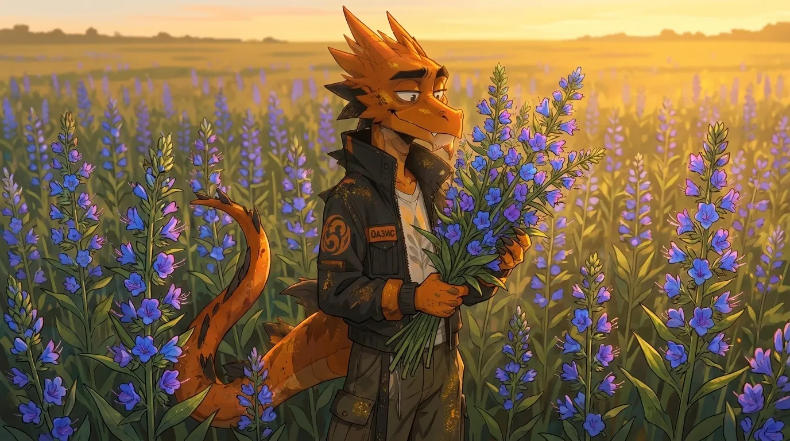
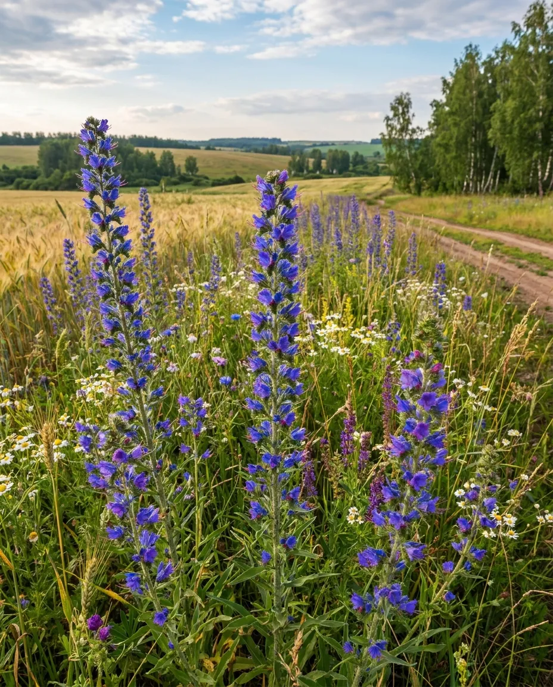
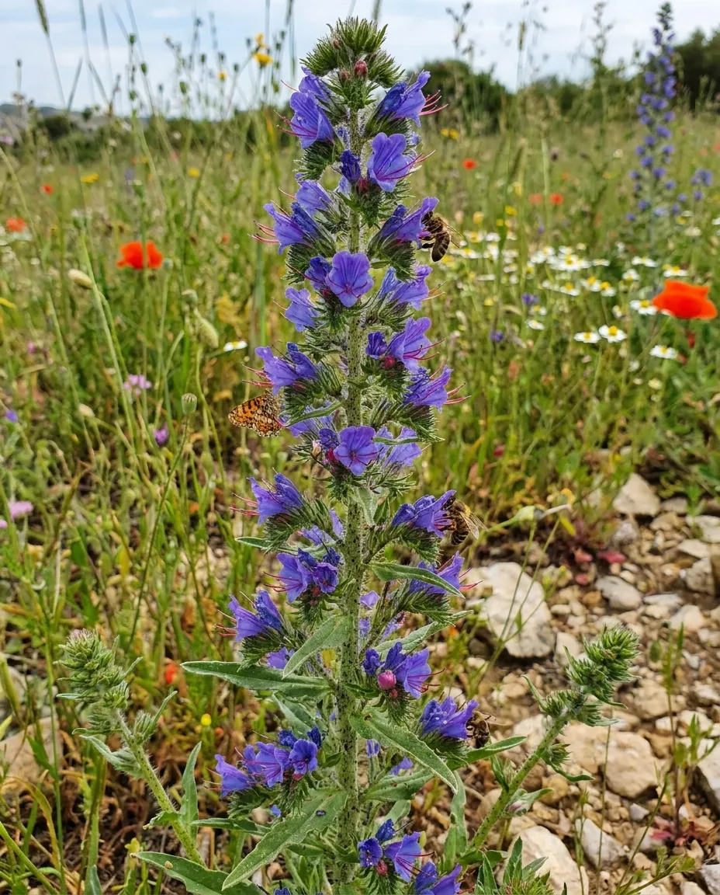

СИНЯК ОБЫКНОВЕННЫЙ
Синяк обыкновенный — двулетнее травянистое растение семейства Бурачниковые, которое представляет особую ценность как высокопродуктивный медонос. Его цветки в начале распускания имеют розоватую окраску, а затем приобретают характерный ярко-синий цвет. Продолжительное цветение поддерживает устойчивую кормовую базу для пчёл и других насекомых-опылителей.
Культура отличается неприхотливостью к условиям выращивания, хорошо переносит засуху, жару и пониженные температуры, способна расти на лёгких и менее плодородных почвах. Селекционная программа направлена на создание форм с высокой нектаро- и медопродуктивностью, длительным и дружным цветением, устойчивостью к стрессовым факторам, а также улучшенной семенной продуктивностью и технологичностью выращивания.

Направления селекции
- Высокая нектарная продуктивность
- Продолжительное, обильное и дружное цветение
- Скороспелость
- Устойчивость к полеганию и осыпанию семян
- Засухоустойчивость
- Холодостойкость и зимостойкость
- Пригодность к механизированному возделыванию и уборке
